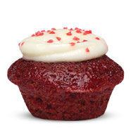
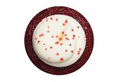
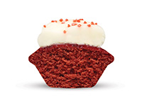

Red Velvet Cupcake Recipe
Prep: 30 min | Cook: 30 min | Yield: 8 servings

Cupcake Ingredients
- Vegetable oil for the pans
- 2 1/2 cups all-purpose flour
- 1 1/2 cups sugar
- 1 teaspoon baking soda
- 1 teaspoon fine salt
- 1 teaspoon cocoa powder
- 1 1/2 cups vegetable oil
- 1 cup buttermilk, at room temperature
- 2 large eggs, at room temperature
- 2 tablespoons red food coloring (1 ounce)
- 1 teaspoon white distilled vinegar
- 1 teaspoon vanilla extract
- Crushed pecans, for garnish
- Cream cheese frosting
Directions
Preheat the oven to 350 degrees F. Lightly oil and flour 3 (9 by 1 1/2-inch round) cake pans. In a large bowl, sift together the flour, sugar, baking soda, salt, and cocoa powder. In another large bowl, whisk together the oil, buttermilk, eggs, food coloring, vinegar, and vanilla.
Using a standing mixer, mix the dry ingredients into the wet ingredients until just combined and a smooth batter is formed.
Divide the cake batter evenly among the prepared cake pans. Place the pans in the oven evenly spaced apart. Bake, rotating the pans halfway through the cooking, until the cake pulls away from the side of the pans, and a toothpick inserted in the center of the cakes comes out clean, about 30 minutes.
Remove the cakes from the oven and run a knife around the edges to loosen them from the sides of the pans. One at a time, invert the cakes onto a plate and then re-invert them onto a cooling rack, rounded-sides up. Let cool completely.
Frost the cake. Place 1 layer, rounded-side down, in the middle of a rotating cake stand. Using a palette knife or offset spatula spread some of the cream cheese frosting over the top of the cake. (Spread enough frosting to make a 1/4 to 1/2-inch layer.) Carefully set another layer on top, rounded-side down, and repeat. Top with the remaining layer and cover the entire cake with the remaining frosting. Sprinkle the top with the pecans.
|  |  |